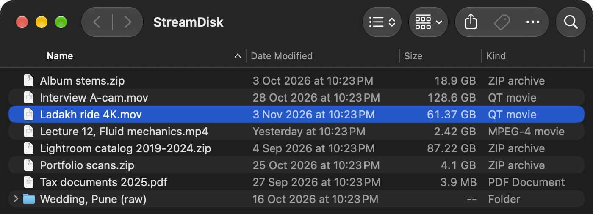
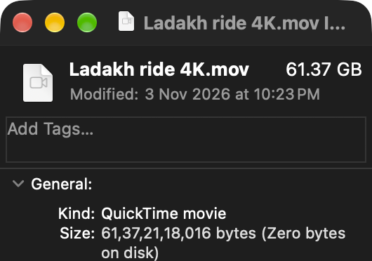

Your Google Drive, as a disk on your Mac.
Files show up in Finder at full size and take no space. Open one and it streams.


A 61 GB film. Zero bytes on disk.
Your files stay in Google Drive. Your Mac only knows their names and sizes until an app reads them, and then it fetches just the part being read.
Three things to do, once.
-
Sign in with Google
StreamDisk asks for access only to the files it adds to your Drive. The rest of your Drive stays out of reach.
-
Move big folders in
They upload in the background to a StreamDisk folder in your Drive, and the space comes back to your Mac.
-
Open files where they are
Double-click in Finder. QuickTime, IINA, VLC, Final Cut and every other app read the file like any other disk.
1.7 seconds
Fast on an ordinary connection.
That is how long a 1080p video took to open on a 28 Mbps home line. The bytes a player is waiting for always download first, and the next part of the file is fetched while you watch.